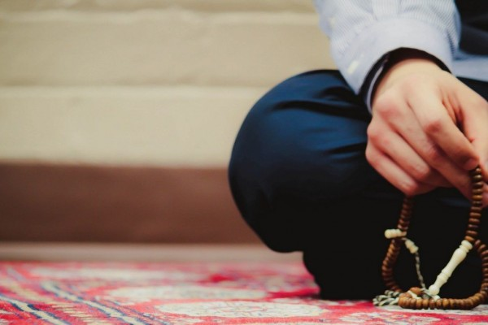

Berzikir dan Mencibir
Jumat, 27 Februari 2015 00:20
Oleh: KH Husin Naparin
ABDULLAH bin Muhammad, seorang petugas keamanan pada masa pemerintahan Khalifah Yazid bin Abdul Malik, berjaga-jaga di tepi pantai Mesir (daerah Bathihah). Di situ ia menemukan sebuah kemah yang dihuni seorang lelaki yang kedua tangan dan kedua kakinya buntung. Pendengaran dan penglihatanya juga sudah lemah. Seluruh tubuhnya tak berfungsi, kecuali lidahnya.
Kedengaran ia berdoa, "Ya Allah, berilah aku kemampuan agar senantiasa memuji Engkau, dengan pujian yang membuat aku mampu memenuhi rasa syukur atas nikmat yang telah Engkau anugrahkan kepadaku dimana Engkau telah melebihkan aku dari segenap makhluk-Mu."
Mendengar hal itu Abdullah menemuinya. Setelah memberi salam, ia berkata, "Aku mendengar doamu; dalam keadaanmu begini, kelebihan apa yang telah engkau terima melebihi orang lain sehingga engkau mensyukurinya."
Orang itu menjawab, "Memang begini keadaanku, semua anggota tubuhku tak berfungsi, kecuali lidahku yang masih bisa memuji Allah. Inilah yang aku syukuri. Aku tidak mampu menolong diriku, tadinya aku ditemani oleh anakku yang selalu datang pada waktu salat untuk mewuduiku, jika aku lapar ia menyuapiku, jika aku haus ia meminumiku. Namun sudah tiga hari ia tidak datang, aku kehilangan dia. Jika engkau berkenan, carilah dia, semoga Allah merahmatimu."
Abdullah pun bergegas keluar kemah dan mencari putra orang itu. Tidak berapa jauh dari kemah itu, ditemukan seorang anak yang anggota tubuhnya bercerai-berai dan tercabik-cabik diterkam binatang buas. Lalu Abdullah balik kembali menemui orang itu dikemahnya dan meceritakan apa yang telah terjadi.
Mendengar hal itu, lelaki yang ditimpa musibah itu mengucapkan, "Alhamdulillah, segala puji milik Dzat yang tidak menciptakan dari garis keturunanku seorang anak yang berbuat maksiat kepada-Nya sehingga disiksa di neraka."
Setelah itu ia mengucapkan, inna lillahi wa inna ilaihi raji'un. Beberapa saat ia menangis lalu menghembuskan nafasnya yang terakhir, ia telah meninggal dunia. Abdullah pun mengucapkan inna lillahi wa inna ilaihi raji'un.
Tiba-tiba saja datang empat orang lelaki masuk ke kemah itu tanpa permisi seraya bertanya, "Wahai hamba Allah, apa yang terjadi?"
Abdullah pun menceritakan apa yang terjadi beberapa saat berlalu. Orang-orang itu berkata lagi, "Bolehkah kami melihat wajahnya?"
Abdullah membuka tutup wajah yang sudah menjadi mayat. Semua mereka memperhatikannya, lalu berkata, "Benar selama ini matanya tidak pernah digunakan untuk melihat hal-hal yang haram. Telah sekian lama tubuhnya hanya digunakan untuk bersujud tatkala orang-orang tertidur pulas."
Abdullah bertanya kepada mereka, "Siapakah sebenarnya orang ini?" Mereka menjawab, “Abu Qilabah Al-Jarni, teman dekat Ibnu Abbas. Orang ini sangat mencintai Allah dan Rasul-Nya."
Secara bersama-sama mereka menyelengarakan jenazah, memandikan, mengkafani dengan kain yang ada, kemudian menguburkannya. Setelah itu ke empat orang itu meninggalkan kemah dan Abdullah kembali ke markasnya.
Menjelang malam, Abdullah merebahkan tubuh untuk tidur. Ia bermimpi melihat orang itu berada di taman surga dikelilingi para bidadari yang menyenandungkan, Salamun alaikum bima shabartum, fani'ma uqbad-dar; artinya, "keselamatan atasmu berkat kesabaranmu, alangkah baiknya tempat kesudahan itu." (QS Ar-Ra'd, 24).
Dalam mimpi itu, Abdullah bertanya kepadanya, "Bukankah kamu ini temanku?"
Ia menjawab, "Ya". Abdullah bertanya lagi, "Dari mana kamu mendapatkan martabat yang tinggi ini?" Ia menjawab, "Sesungguhnya Allah menyediakan martabat yang mulia lagi tinggi, yang tidak dapat dicapai kecuali melalui kesabaran ketika ditimpa musibah dan bersyukur ketika mendapat nikmat, disertai rasa takut kepada Allah baik dalam keadaan sendiri, maupun ketika bersama orang lain." (Ibnu Hiban, Ats-Tsiqqat, V/2-5 dan lihat Al-wa'ie no. 166 th. 14, Juni2014 hal 34 dst).
Demikianlah kisah seorang manusia yang sama sekali tidak mempunyai apa-apa kecuali lidah yang pandai menyebut nama Allah, berapa banyak manusia sekarang yang mempunyai segala macam apa-apa, tapi lidahnya tidak pandai berzikir. Sebenarnya negeri ini memerlukan penghuni-penghuni yang pandai berdzikir, bukan penghuni-penghuni yang hanya pandai mencibir.